VLSI Design Project
CMOS Logic Circuit Design & Layout
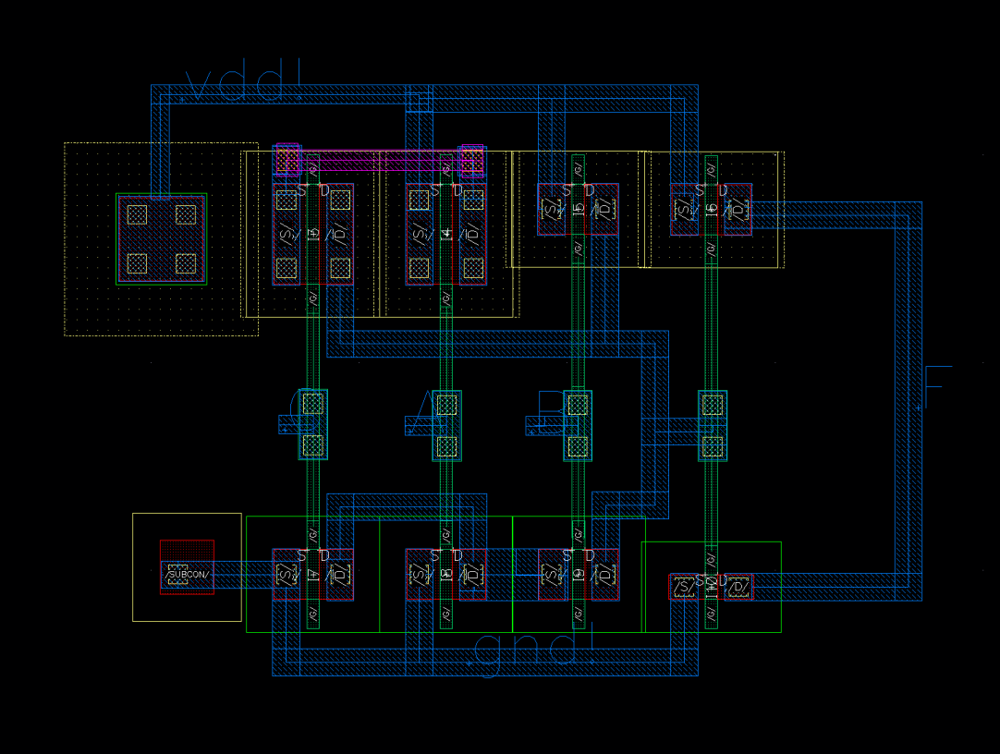
Designed and implemented a complementary static CMOS circuit for the Boolean function F = AB + BC, including schematic capture, physical layout, DRC/LVS verification, and post-layout performance analysis using Cadence Virtuoso.
Project Overview
This project involved the complete design flow for implementing a Boolean logic function using complementary static CMOS technology. The goal was to implement F = AB + BC while minimizing transistor count and optimizing layout area.
The design was completed using Cadence Virtuoso for schematic capture and layout, with Calibre for design rule checking (DRC) and layout vs. schematic (LVS) verification.
Function Analysis & Optimization
Boolean Simplification
Using K-map analysis, the original function was simplified to reduce transistor count:
F = AB + BC = B(A + C)
This simplified form allows direct implementation using CMOS pull-up network (PUN) and pull-down network (PDN), reducing the total transistor count to 8 transistors (including the output inverter).
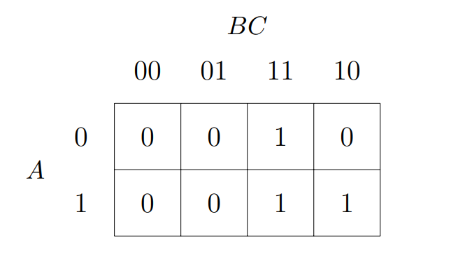
Network Design
- 1 pMOS controlled by B in parallel with
- 2 series pMOS controlled by A and C
- Total: 3 pMOS transistors
- 1 nMOS controlled by B in series with
- 2 parallel nMOS controlled by A and C
- Total: 3 nMOS transistors
Transistor Sizing
Transistor sizing followed the standard 2:1 PMOS:NMOS ratio to compensate for the lower hole mobility compared to electrons, ensuring balanced rise and fall times.
| Network | Transistor | Width | Length |
|---|---|---|---|
| PUN (pMOS) | A, B, C | 480 nm | 60 nm |
| PDN (nMOS) | A, B, C | 240 nm | 60 nm |
| Inverter | pMOS | 480 nm | 60 nm |
| Inverter | nMOS | 240 nm | 60 nm |
After equivalent resistance calculations, the PUN:PDN ratio maintains the desired 2:1 ratio (240nm:120nm effective widths) for balanced pull-up and pull-down strengths.
Schematic Design
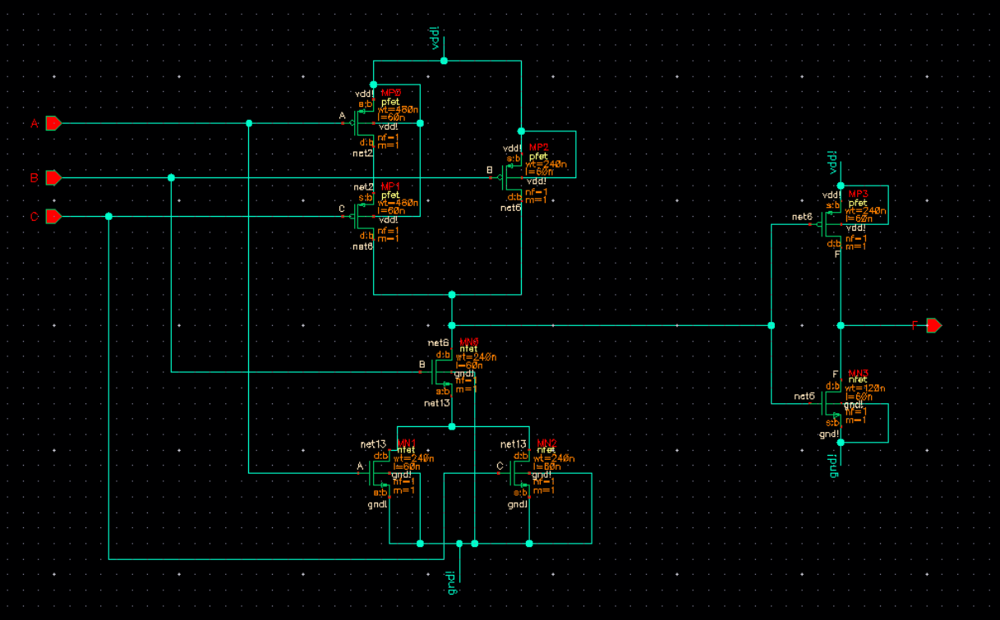
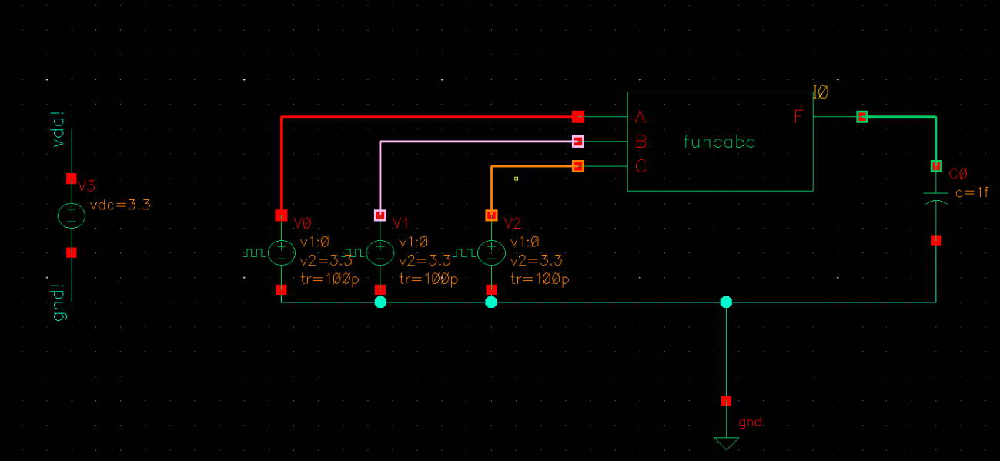
Simulation Results
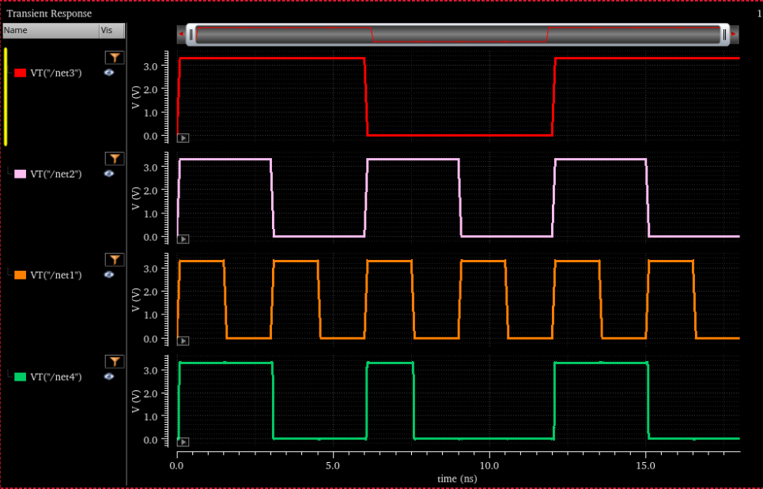
The output F is high when either both A and B are high, or when both B and C are high, confirming correct functionality.
Layout Design Strategy
Source/Drain Sharing
Strategic source/drain sharing was implemented to minimize area and reduce parasitic capacitances:
- pMOS transistors arranged to maximize diffusion sharing between adjacent devices
- nMOS transistors placed to optimize diffusion continuity
- Vias used for cross-layer connections (C's drain to A's drain)
Interconnect Optimization
- Metal1: Horizontal tracks for power distribution (VDD top, GND bottom)
- Polysilicon: Vertical gate connections with minimal bends
- Input signals routed efficiently from the left; output taken from the right
- Multiple contacts at critical junctions to reduce resistance
Stick Diagram
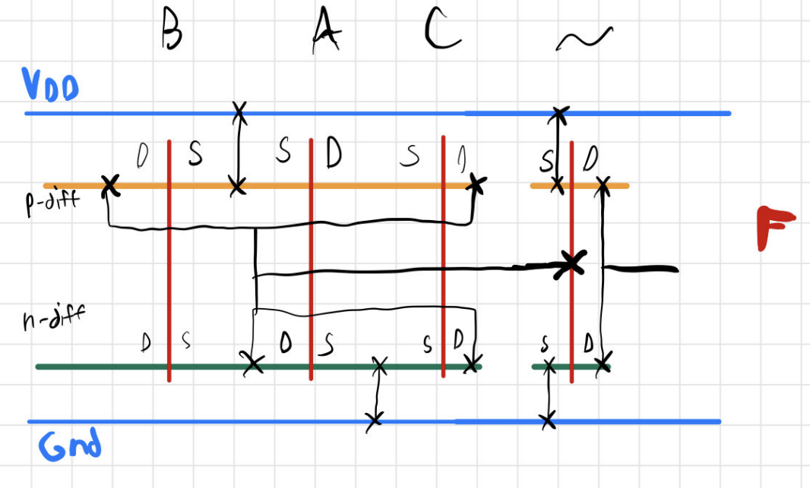
Full Layout
Layout Area
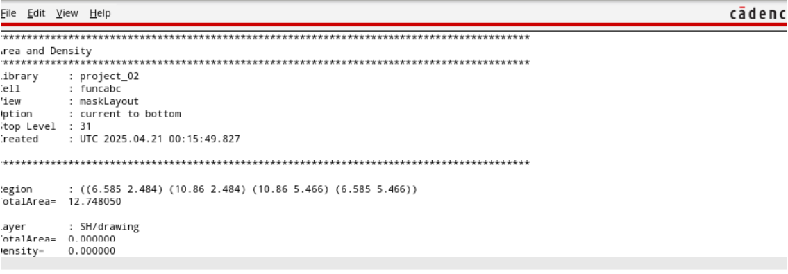
Verification Results
Design Rule Check (DRC)
Layout verified against foundry design rules using Calibre DRC. All checks passed after resolving initial errors related to:
- Metal1 track misalignment (fixed with Align tool)
- Minimum spacing violations (fixed by adjusting PDN position)
Layout vs. Schematic (LVS)
Verified using Calibre LVS — netlists match, confirming correct implementation. Resolved issues with:
- Label settings configuration
- Missing connection (fixed using via for cross-layer routing)
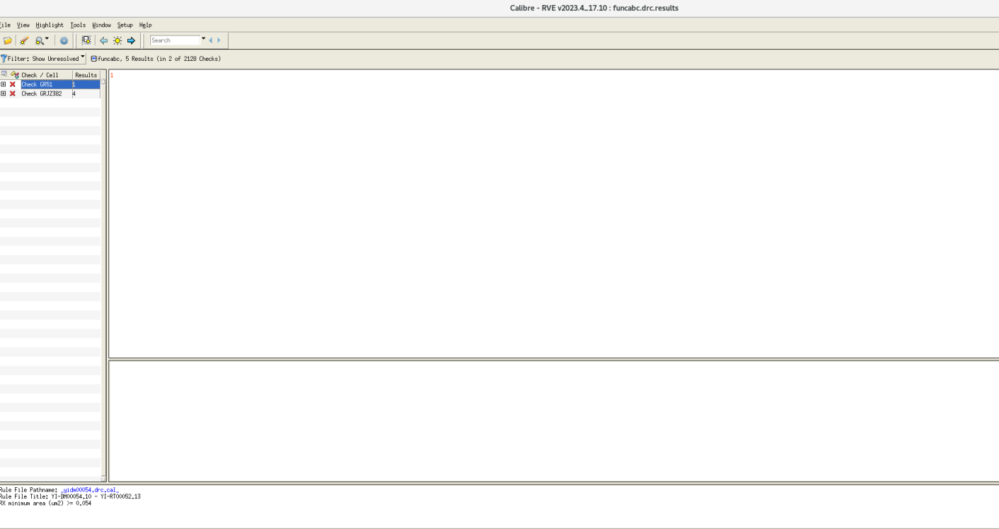
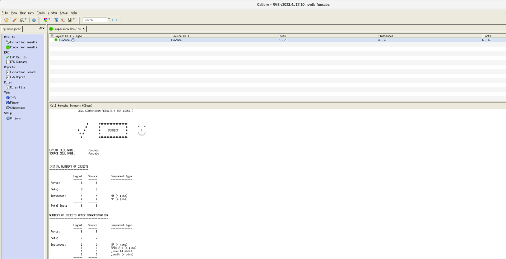
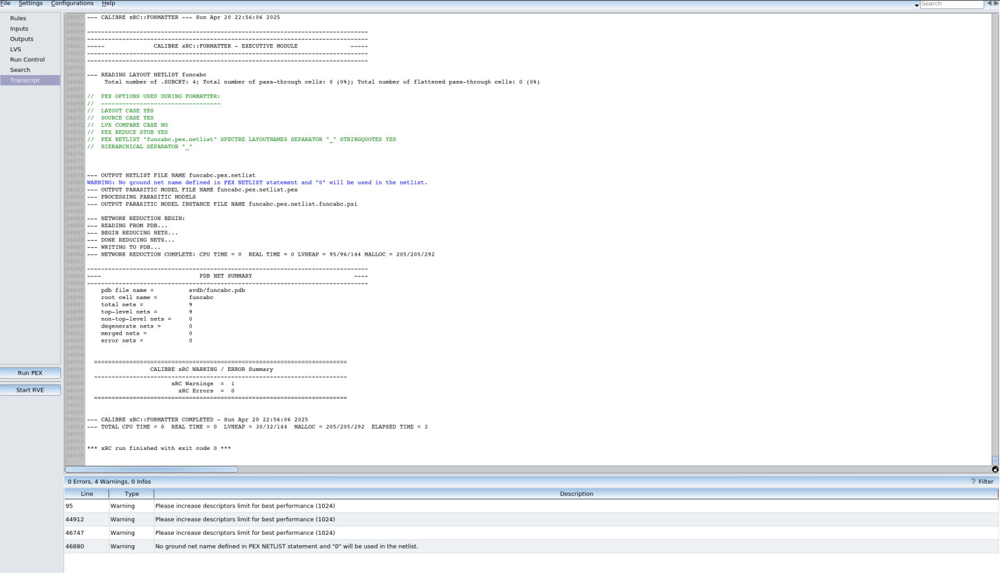
Performance Analysis
0.5 fF Load Capacitor
| Metric | Schematic | Post-Layout | Change |
|---|---|---|---|
| Rise Time | 0.01355 ns | 0.01872 ns | +38.2% |
| Fall Time | 0.01346 ns | 0.01903 ns | +41.4% |
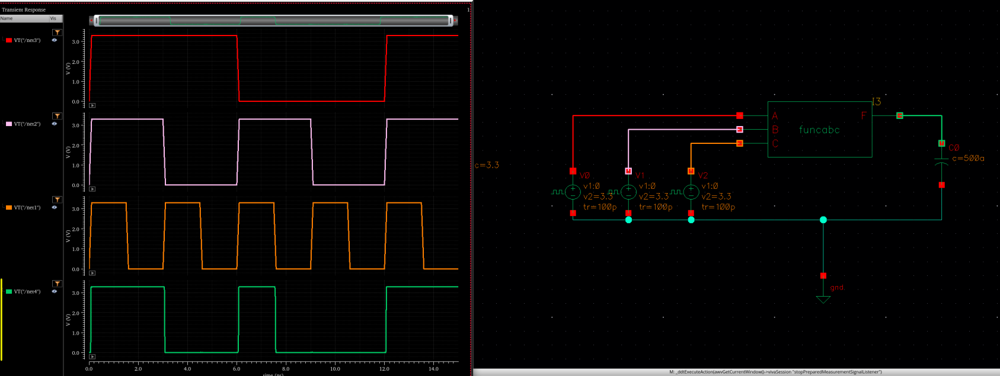
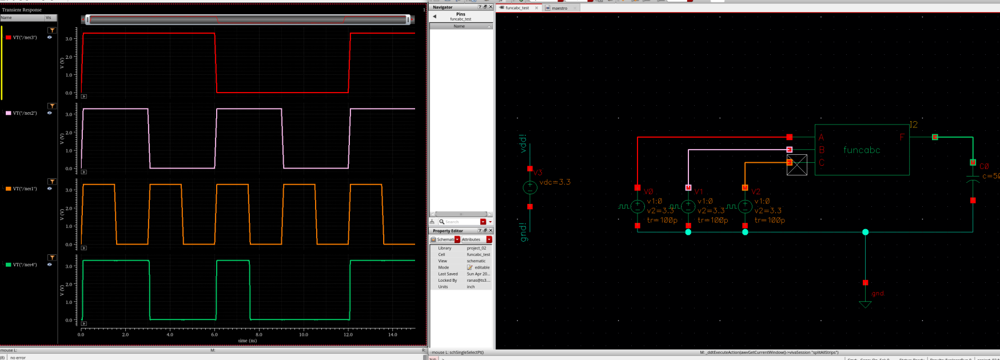
15 fF Load Capacitor
| Metric | Schematic | Post-Layout | Change |
|---|---|---|---|
| Rise Time | 0.10671 ns | 0.14796 ns | +38.7% |
| Fall Time | 0.14556 ns | 0.13406 ns | -7.9% |
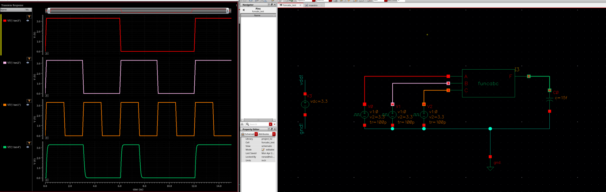
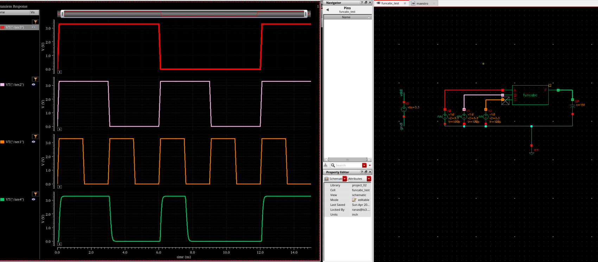
Analysis
The post-layout simulation shows increased propagation delays compared to schematic simulation due to parasitic elements not modeled in schematic:
- Junction capacitances at source/drain regions
- Metal interconnect resistances and capacitances
- Contact and via resistances
- Gate-to-diffusion coupling capacitances
The 30x increase in load capacitance (0.5 fF → 15 fF) resulted in approximately 8x longer propagation delays, consistent with the RC time constant relationship.
Truth Table Verification
Simulation verified correct functionality across all input combinations:
| A | B | C | F = B(A+C) |
|---|---|---|---|
| 0 | 0 | 0 | 0 |
| 0 | 0 | 1 | 0 |
| 0 | 1 | 0 | 0 |
| 0 | 1 | 1 | 1 |
| 1 | 0 | 0 | 0 |
| 1 | 0 | 1 | 0 |
| 1 | 1 | 0 | 1 |
| 1 | 1 | 1 | 1 |
Tools Used
- Cadence Virtuoso: Schematic Editor, Layout Suite XL, ADE Explorer
- Calibre: DRC, LVS, xRC (Parasitic Extraction)
- Process: GlobalFoundries PDK
Key Takeaways
- Boolean simplification before implementation reduces transistor count and area
- Post-layout verification is essential — parasitic effects significantly impact timing
- Source/drain sharing and interconnect optimization are critical for compact layouts
- Iterative DRC/LVS debugging is a normal part of the physical design flow
- The 2:1 PMOS:NMOS sizing ratio effectively balances rise/fall times